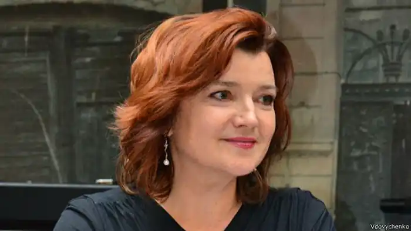
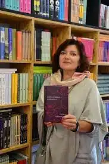
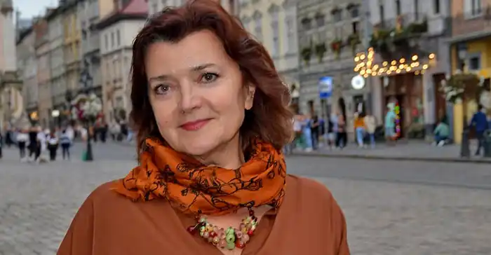

Галина Костянтинівна Вдовиченко (народилась 21 червня 1959, Печенга (Петсамо) Мурманська область) — українська письменниця та журналістка. Член PEN Ukraine.
У дитинстві часто переїжджала разом з родиною. Навчалась у школах Івано-Франківська, Надвірної, Рави-Руської, Москви, постійно бувала у бабусі з дідом у містечку Отинія Коломийського району Івано-Франківської області, на батьківщині батька.
Закінчила філологічний факультет Львівського національного університету ім. Івана Франка. Живе у Львові. До 2017 року працювала заступницею головного редактора щоденної газети "Високий Замок". Має доньку та сина. Серед захоплень — гірські лижі, дизайн одягу та інтер'єрів, колекціонування рукавичок. Галина Вдовиченко дебютувала у 2008 році з романом "Пів'яблука", який вийшов у видавництві "Нора-Друк" (Київ) і став лідером продажів на стенді видавництва під час роботи Львівського Форуму видавців-2008. Перший тираж книжки розійшовся протягом місяця. Другий роман Вдовиченко "Замок Гербуртів" здобув першу премію у номінації "романи" на конкурсі "Коронація слова — 2009", вийшов у світ під назвою "Тамдевін" у видавництві "Нора-Друк". Лише на Львівському Форумі видавців-2009 було продано 985 примірників роману "Тамдевін". У 2010 році вийшов роман "Хто такий Ігор?" ("Нора-Друк"). У 2011 році у видавництві "Грані-Т" вийшла перша книжка Вдовиченко для дітей — казкова повість "Мишкові Миші" з ілюстраціями художниці Анни Сарвіри. У 2017 році у "Видавництві Старого Лева" вийшло перевидання повісті з ілюстраціями Інни Черняк. Того ж року у видавництві "Клуб сімейного дозвілля" (Харків) виходить роман "Бора", а у видавництві "Фоліо" (Харків) — антологія малої прози "20 письменників сучасної України", до якої увійшло оповідання письменниці "Брат". 2012 рік: роман "Купальниця" (видавництво "Клуб сімейного дозвілля") та участь у збірці видавництва "Фоліо" "27 регіонів України" (оповідання "Вулиця Дадугіна — вулиця Довбуша" про Івано-Франківщину). 2013 рік: з виходу казкової повісті "Ліга непарних шкарпеток" у видавництві "Клуб сімейного дозвілля" започатковано україномовну серію книжок для дітей. Галина Вдовиченко та Лариса Денисенко стали упорядницями антології "Жити-Пити. 40 градусів життя" — збірки творів сучасних українських письменників(-ць) про алкоголь, до якої увійшло оповідання "Вікно" ("Клуб Сімейного Дозвілля"). У видавництві "Фоліо" побачила світ антологія "Історія України очима письменників" (оповідання "Княгиня та вогняна саламандра"). Наприкінці 2013-го року у видавництві "Клуб сімейного дозвілля" одночасно вийшли роман "Пів'яблука" у новій авторській редакції та продовження цього роману — "Інші пів'яблука". "Видавництво Старого Лева" видало збірку "13 різдвяних історій", серед яких — "Повернення до Матроської тиші" Вдовиченко. 2014 рік: у "Клубі Сімейного Дозвілля" вийшла колективна збірка оповідань "Ода до радості" (упорядниця Галина Вдовиченко), оповідання "Запах скошених кульбабок". Участь в антології видавництва "Фоліо" "Україна-Європа" (уривок "Пінзель у Парижі"), у збірці "Видавництва Старого Лева" "Друзі незрадливі" (оповідання "Умка, Умас, Умич"), та в авторському проєкті Оксани Забужко "Літопис самовидців: дев'ять місяців українського спротиву", упорядниця Тетяна Терен, видавництво "Комора". 2015 рік: у "Видавництві Старого Лева" вийшла повість-казка для дітей "36 і 6 котів". У видавництві "Клуб сімейного дозвілля" — колективна збірка "Волонтери. Мобілізація добра", укладачка Ірена Карпа (до збірки увійшло оповідання "Госпіталь. Розвантажувальні дні"). У цьому ж видавництві побачила світ авторська збірка Вдовиченко — роман "Тамдевін" (нове видання), а також "Вовчі історії замку Гербуртів", а на Форумі видавців-2015 "Клуб сімейного дозвілля" презентував роман "Маріупольський процес". За результатами Всеукраїнського рейтингу "Книжка року 2015" роман опинився у топ-7 у номінації "Красне письменство. Жанрова література". Участь у колективній збірці "Маслини на десерт" ("Фоліо", серія "Добрі історії") — оповідання "Никифор та інші чоловіки у грі "Вірю-не вірю"). Участь у колективній збірці "Львів. Кава. Любов" (КСД). 2016 рік: книжка для малечі "Засинай. Прокидайся" ("Видавництво Старого Лева"), участь у колективній збірці з серії "Дорожні історії" КМ БУКС "Аеропорт і…". Вихід авторської збірки малої прози "Ось відкрита долоня" у видавництві "Клуб Сімейного Дозвілля". 2017 рік: продовження повісті-казки для дітей "36 і 6 котів" — "36 і 6 котів-детективів" ("Видавництво Старого Лева"). "36 і 6 котів" вийшли ще й шрифтом Брайля ("Фонд родини Нечитайло"). Вихід книжки "Мишкові Миші з продовженням" — повість для дітей "Мишкові Миші" та її продовження — "Зірковий час Мишкових Мишей", ілюстрації Інни Черняк ("Видавництво Старого Лева"). Участь у "Хрестоматії сучасної української дитячої літератури для читання в 3, 4 класах", серія "Шкільна бібліотека" ("Видавництво Старого Лева") — уривок "Найдовші вуса" з книжки "36 і 6 котів". Участь у збірках "Львів — місто натхнення. Література" ("Видавництво Старого Лева") і "То є Львів. Колекція міських історій" ("Видавництво Старого Лева"). Упорядниця колективної збірки "Зелене яблуко, срібні мечі" — подорожні оповідання та есе після мандрівок Добромильським краєм (ЛА "Піраміда"). 2018 рік: книжка для дітей "Сова, яка хотіла стати жайворонком", художнє оформлення Христини Лукащук (видавництво "Чорні вівці" — "Книги-ХХІ"). У "Видавництві Старого Лева" вийшла книжка для дітей "Чорна-чорна курка" з ілюстраціями Наталки Гайди. "Фонд родини Нечитайло" видав шрифтом Брайля "36 і 6 котів-детективів". Участь у колективних збірках: "Це зробила вона" ("Соломія Крушельницька", видавництво "Видавництво"), "Лялька. Оповідання про дитинство" ("Начебто про ведмедика", "Видавництво Старого Лева") та "19 різдвяних історій" (оповідання "Лорд, вівсянка і любов", "Видавництво Старого Лева"). 2019 рік: у "Видавництві Старого Лева" вийшла книжка "Пів'яблука. Інші пів'яблука" — два романи в новій авторській редакції. На Дитячому Форумі та Книжковому Арсеналі презентували третю книжку з серії — "36 і 6 котів-компаньйонів" ("Видавництво Старого Лева", ілюстрації Наталки Гайди). Вийшли шрифтом Брайля "Мишкові Миші з продовженням" та "Чорна-чорна курка" ("Фонд родини Нечитайло"). У "Видавництві Старого Лева" побачило світ нове видання "Ліги непарних шкарпеток" з ілюстраціями Арсена Джанікяна. Повість "36 і 6 котів" стала переможицею у номінації "Дитяча література (проза)" на фестивалі Book Space Fest у Всеукраїнському літературному конкурсі прозових україномовних видань. Книжка "Сова, яка хотіла стати жайворонком" (художнє оформлення Христини Лукащук, видавництво "Чорні вівці") увійшла до міжнародного каталогу "Білі круки 2019" ("White Ravens 2019"). Вийшов роман "Найважливіше — наприкінці" (Видавництво Старого Лева). У листопаді 2019 року у "Видавництві Старого Лева" вийшли книжки "Котохатка" (художнє оформлення Наталії Гайди) і колективна збірка "Казки під ялинку" (в ній казка "Муха-несплюха", ілюстрації Наталії Гайди). 2020-й рік. Вийшла книжка для дітей "Містельфи". Книжка "36 і 6 котів-компаньйонів" увійшла до короткого списку премії "Львів — місто літератури ЮНЕСКО". Побачила світ колективна збірка есеїв Українського осередку Міжнародного ПЕН-клубу "Мости замість стін". 2021-й рік. У "Видавництві Старого Лева" вийшла четверта книжка з серії про 36 і 6 котів — "36 і 6 котів-рятувальників" у художньому оформленні Наталії Гайди. Центр дитячої літератури в Латвії оголосив список колекції книг "Журі для дітей, молоді та батьків-2021", до якого потрапила книжка "36 un 6 kaki"("36 і 6 котів" у перекладі латиською). На студії анімації "Червоний собака" розпочато роботу над мультсеріалом за книжкою "Чорна-чорна курка" (режисерка Наталія Гайда, сценарій Галини Вдовиченко і Наталії Гайди).